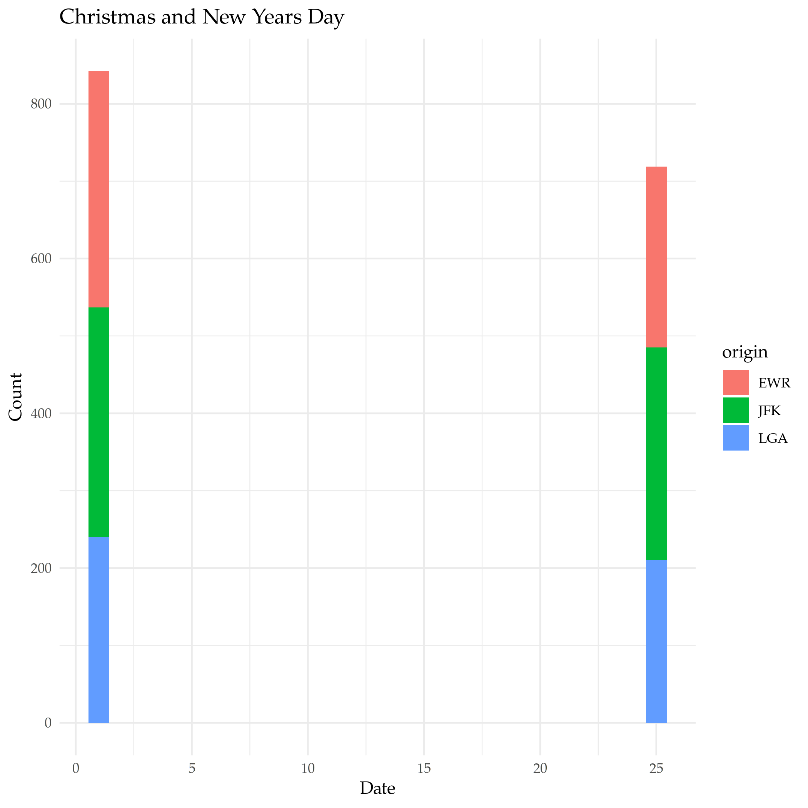

A First Look at dplyr
Table of Contents
In the Beginning
This is a look at dplyr based on Chapter Three of R For Data Science. It focuses on what the book identifies as the six key dplyr functions.
| Function | What It Does | By Another Name |
|---|---|---|
filter |
Pick out rows based on their values. | Boolean Slice |
arrange |
Re-order the rows. | Sort |
select |
Pick out variables by their names. | Column subset |
mutate |
Create new variables using existing ones. | Feature Engineering |
summarize |
Summarize many values as a single value. | Statistic |
group_by |
Changes scope of other functions to operate on group. |
Imports
library(ascii)
library(assertthat)
library(dplyr)
library(ggplot2)
library(knitr)
library(nycflights13)
library(tidyverse)
Note: The stuff in the tidyverse tends to clobber built-in functions, which can make it hard to understand sometimes when things go wrong. If you forget to load dplyer, for instance, there's already a filter function, but it doesn't do the same thing as the one you load with dplyr so you'll get weird error messages if you try to use it. Notably I was getting this message:
Error in filter(airlines, carrier == "US") : object 'carrier' not found
Anyway, now some options for the packages.
options(asciiType="org")
theme_set(theme_minimal(base_family="Palatino"))
And a couple of helpers to print (the tibble objects dump weird characters into the org-mode output).
khead <- function(data) {
#' Prints a table of the first lines of the dataframe
#'
#' @param data The data to print
table <- kable(head(data))
table[2] <- gsub(":", "-", table[2])
table
}
okable <- function(data) {
#' Prints data as an org-mode table
#'
#' @param data The data to print
table <- kable(data)
table[2] <- gsub(":", "-", table[2])
table
}
got_all_your_data <- function(data) {
#' Checks if there's any missing values
#'
#' @param data The vector of data to check
see_if(noNA(data))
}
The Data
We're going to look at the flights dataframe loaded by the nycflights13 package (which, curiously, R loads using the library function).
str(flights)
tibble [336,776 × 19] (S3: tbl_df/tbl/data.frame) $ year : int [1:336776] 2013 2013 2013 2013 2013 2013 2013 2013 2013 2013 ... $ month : int [1:336776] 1 1 1 1 1 1 1 1 1 1 ... $ day : int [1:336776] 1 1 1 1 1 1 1 1 1 1 ... $ dep_time : int [1:336776] 517 533 542 544 554 554 555 557 557 558 ... $ sched_dep_time: int [1:336776] 515 529 540 545 600 558 600 600 600 600 ... $ dep_delay : num [1:336776] 2 4 2 -1 -6 -4 -5 -3 -3 -2 ... $ arr_time : int [1:336776] 830 850 923 1004 812 740 913 709 838 753 ... $ sched_arr_time: int [1:336776] 819 830 850 1022 837 728 854 723 846 745 ... $ arr_delay : num [1:336776] 11 20 33 -18 -25 12 19 -14 -8 8 ... $ carrier : chr [1:336776] "UA" "UA" "AA" "B6" ... $ flight : int [1:336776] 1545 1714 1141 725 461 1696 507 5708 79 301 ... $ tailnum : chr [1:336776] "N14228" "N24211" "N619AA" "N804JB" ... $ origin : chr [1:336776] "EWR" "LGA" "JFK" "JFK" ... $ dest : chr [1:336776] "IAH" "IAH" "MIA" "BQN" ... $ air_time : num [1:336776] 227 227 160 183 116 150 158 53 140 138 ... $ distance : num [1:336776] 1400 1416 1089 1576 762 ... $ hour : num [1:336776] 5 5 5 5 6 5 6 6 6 6 ... $ minute : num [1:336776] 15 29 40 45 0 58 0 0 0 0 ... $ time_hour : POSIXct[1:336776], format: "2013-01-01 05:00:00" "2013-01-01 05:00:00" ...
The dataset lists all the flights that left New York City airports in 2013 heading to destinations in the United States, Puerto Rico, and the American Virgin Islands.
Filter
The Basic Filter
filter takes the dataframe as the first argument and every argument after that has to be a boolean expression based on the dataframe. If you pass in more than one condition dplyr will and them. Let's see the flights on Christmas.
christmas <- filter(flights, month==12, day==25)
plot = ggplot(data=christmas) +
geom_bar(
mapping=aes(x=origin, fill=carrier)
) +
labs(title="Christmas Flights", x="Origin", y="Count")
ggsave("christmas_flights_counts.png")

Or, Not And
Since the default is for the filter to and everything together, if you want to use something else (like OR) you need to create a single argument built with the OR operator (|). If you're using a single column for the OR, there's actually a (possibly) easier way that works like python's in where you check if the value is in a collection. Let's see the flights on Christmas and on Christmas Eve
.
both_days <- filter(flights, month==12, day %in% c(24, 25))
plot = ggplot(data=both_days) +
geom_bar(
mapping=aes(x=day, fill=origin)
) +
labs(title="Christmas Eve and Day Flights", x="Day", y="Count")
ggsave("christmas_day_and_eve.png")

And and Or
What if we want New-Years Day and Christmas? In this case we need to keep the month with the day so we can't just use the in operator, but we can use the AND and OR operators to make it work.
and_new_years = filter(flights, (month==12 & day==25) | (month==1 & day==1))
plot = ggplot(data=and_new_years) +
geom_bar(
mapping = aes(x=day, fill=origin)
) +
labs(title="Christmas and New Years Day", x="Date", y="Count")
ggsave("christmas_new_years.png")

plot = ggplot(data=and_new_years) +
geom_boxplot(
mapping = aes(x=origin, y=dep_delay, color=origin)
) +
labs(title="Christmas and New Years Day Delays", x="Departure Airport", y="Delay (Minutes)")
ggsave("christmas_new_years_delay.png")

Arrange
arrange is a function to sort the rows. By default it sorts then in non-decreasing (ascending) order using a column you give it. You can givie it multiple columns in which case whenever there's a tie it will look in the next column you gave it to see if it can break it (the tie, I mean).
Ascending Order
What are the shortest flights?
khead(arrange(flights, distance))
| year | month | day | dep_time | sched_dep_time | dep_delay | arr_time | sched_arr_time | arr_delay | carrier | flight | tailnum | origin | destination | air_time | distance | hour | minute | time_hour |
|---|---|---|---|---|---|---|---|---|---|---|---|---|---|---|---|---|---|---|
| 2013 | 7 | 27 | NA | 106 | NA | NA | 245 | NA | US | 1632 | NA | EWR | LGA | NA | 17 | 1 | 6 | 2013-07-27 01:00:00 |
| 2013 | 1 | 3 | 2127 | 2129 | -2 | 2222 | 2224 | -2 | EV | 3833 | N13989 | EWR | PHL | 30 | 80 | 21 | 29 | 2013-01-03 21:00:00 |
| 2013 | 1 | 4 | 1240 | 1200 | 40 | 1333 | 1306 | 27 | EV | 4193 | N14972 | EWR | PHL | 30 | 80 | 12 | 0 | 2013-01-04 12:00:00 |
| 2013 | 1 | 4 | 1829 | 1615 | 134 | 1937 | 1721 | 136 | EV | 4502 | N15983 | EWR | PHL | 28 | 80 | 16 | 15 | 2013-01-04 16:00:00 |
| 2013 | 1 | 4 | 2128 | 2129 | -1 | 2218 | 2224 | -6 | EV | 4645 | N27962 | EWR | PHL | 32 | 80 | 21 | 29 | 2013-01-04 21:00:00 |
| 2013 | 1 | 5 | 1155 | 1200 | -5 | 1241 | 1306 | -25 | EV | 4193 | N14902 | EWR | PHL | 29 | 80 | 12 | 0 | 2013-01-05 12:00:00 |
The data uses the three-letter airport codes, but there's another dataframe loaded with ggplot2 named airports that we can use to translate them to airport names.
okable(filter(airports, faa %in% c("PHL", "LGA", "EWR")))
| faa | name | lat | lon | alt | tz | dst | tzone |
|---|---|---|---|---|---|---|---|
| EWR | Newark Liberty Intl | 40.69250 | -74.16867 | 18 | -5 | A | America/New_York |
| LGA | La Guardia | 40.77725 | -73.87261 | 22 | -5 | A | America/New_York |
| PHL | Philadelphia Intl | 39.87194 | -75.24114 | 36 | -5 | A | America/New_York |
So the shortest flights are from Newark Liberty International to La Guardia airport and the Philadelphia International Airport. I wonder why someone would take a plane to go 17 miles? I guess the traffic must be really bad, or some people just have money (and jet fuel) to burn.
Descending Order
To get the data to sort in descending order you have to pass in another function call (desc). Weird.
What are the longest flights?
khead(arrange(flights, desc(distance)))
| year | month | day | dep_time | sched_dep_time | dep_delay | arr_time | sched_arr_time | arr_delay | carrier | flight | tailnum | origin | destination | air_time | distance | hour | minute | time_hour |
|---|---|---|---|---|---|---|---|---|---|---|---|---|---|---|---|---|---|---|
| 2013 | 1 | 1 | 857 | 900 | -3 | 1516 | 1530 | -14 | HA | 51 | N380HA | JFK | HNL | 659 | 4983 | 9 | 0 | 2013-01-01 09:00:00 |
| 2013 | 1 | 2 | 909 | 900 | 9 | 1525 | 1530 | -5 | HA | 51 | N380HA | JFK | HNL | 638 | 4983 | 9 | 0 | 2013-01-02 09:00:00 |
| 2013 | 1 | 3 | 914 | 900 | 14 | 1504 | 1530 | -26 | HA | 51 | N380HA | JFK | HNL | 616 | 4983 | 9 | 0 | 2013-01-03 09:00:00 |
| 2013 | 1 | 4 | 900 | 900 | 0 | 1516 | 1530 | -14 | HA | 51 | N384HA | JFK | HNL | 639 | 4983 | 9 | 0 | 2013-01-04 09:00:00 |
| 2013 | 1 | 5 | 858 | 900 | -2 | 1519 | 1530 | -11 | HA | 51 | N381HA | JFK | HNL | 635 | 4983 | 9 | 0 | 2013-01-05 09:00:00 |
| 2013 | 1 | 6 | 1019 | 900 | 79 | 1558 | 1530 | 28 | HA | 51 | N385HA | JFK | HNL | 611 | 4983 | 9 | 0 | 2013-01-06 09:00:00 |
You can probably guess the airports from the codes, but we'll look them up anyway.
okable(filter(airports, faa %in% c("JFK", "HNL")))
| faa | name | lat | lon | alt | tz | dst | tzone |
|---|---|---|---|---|---|---|---|
| HNL | Honolulu Intl | 21.31868 | -157.92243 | 13 | -10 | N | Pacific/Honolulu |
| JFK | John F Kennedy Intl | 40.63975 | -73.77893 | 13 | -5 | A | America/New_York |
And the longest flights are from John F. Kennedy International airport to Honolulu International airport.
Select
select helps with getting subsets of columns. At first glance this seems like something that should be easy to do without needing a separate function, but it adds more ways to grab the columns than just passing in the names.
Grab Some Columns
The basic way to get a subset of columns is to pass them in as arguments.
khead(select(flights, month, flight))
| month | flight |
|---|---|
| 1 | 1545 |
| 1 | 1714 |
| 1 | 1141 |
| 1 | 725 |
| 1 | 461 |
| 1 | 1696 |
A Range of Columns
If you want to grab a section of contiguous columns you can pass in the first and last ones separated by a colon (the `:` character, not the vital organ).
khead(select(flights, dep_time:arr_time))
| dep_time | sched_dep_time | dep_delay | arr_time |
|---|---|---|---|
| 517 | 515 | 2 | 830 |
| 533 | 529 | 4 | 850 |
| 542 | 540 | 2 | 923 |
| 544 | 545 | -1 | 1004 |
| 554 | 600 | -6 | 812 |
| 554 | 558 | -4 | 740 |
Helper Functions
Like arrange select uses functions passed in to alter the behavior. Most of them are string-methods-ish.
| Function | What it does |
|---|---|
starts_with("<prefix>") |
Pick columns by a prefix. |
ends_with("<suffix>") |
Pick columns with a suffix. |
contains("<sub-string>") |
Pick columns with a sub-string of the name. |
matches("<regular-expression>") |
Pick out stuff using a regular expression. |
num_range("<prefix>", <number range>) |
Grab columns with the prefix followed by each of the numbers |
last_col() |
Get the last column (negative index). |
all_of(<vector>) |
Grab the columns in the vector. |
any_of(<vector>) |
Same as all_of but ignores non-existent columns in the vector |
where(<function>) |
Applies the function to the columns and picks the ones that return true |
You can also use logical AND and OR operators or a vector to combine the selections, but we'll just do a basic one-function call. Let's grab all the columns with an underscore in their name.
khead(select(flights, contains("_")))
| dep_time | sched_dep_time | dep_delay | arr_time | sched_arr_time | arr_delay | air_time | time_hour |
|---|---|---|---|---|---|---|---|
| 517 | 515 | 2 | 830 | 819 | 11 | 227 | 2013-01-01 05:00:00 |
| 533 | 529 | 4 | 850 | 830 | 20 | 227 | 2013-01-01 05:00:00 |
| 542 | 540 | 2 | 923 | 850 | 33 | 160 | 2013-01-01 05:00:00 |
| 544 | 545 | -1 | 1004 | 1022 | -18 | 183 | 2013-01-01 05:00:00 |
| 554 | 600 | -6 | 812 | 837 | -25 | 116 | 2013-01-01 06:00:00 |
| 554 | 558 | -4 | 740 | 728 | 12 | 150 | 2013-01-01 05:00:00 |
You can also negate the selections using an exclamation point (!), so we can grab all the columns that don't have an underscore in their name like this.
khead(select(flights, !contains("_")))
| year | month | day | carrier | flight | tailnum | origin | dest | distance | hour | minute |
|---|---|---|---|---|---|---|---|---|---|---|
| 2013 | 1 | 1 | UA | 1545 | N14228 | EWR | IAH | 1400 | 5 | 15 |
| 2013 | 1 | 1 | UA | 1714 | N24211 | LGA | IAH | 1416 | 5 | 29 |
| 2013 | 1 | 1 | AA | 1141 | N619AA | JFK | MIA | 1089 | 5 | 40 |
| 2013 | 1 | 1 | B6 | 725 | N804JB | JFK | BQN | 1576 | 5 | 45 |
| 2013 | 1 | 1 | DL | 461 | N668DN | LGA | ATL | 762 | 6 | 0 |
| 2013 | 1 | 1 | UA | 1696 | N39463 | EWR | ORD | 719 | 5 | 58 |
Renaming
The book mentions renaming under the select section because it says that it is a special case of selection, but it has a dedicated function to do that named rename that you should use instead. Let's rename the first column (year).
khead(rename(flights, Jahr=year))
| Jahr | month | day | dep_time | sched_dep_time | dep_delay | arr_time | sched_arr_time | arr_delay | carrier | flight | tailnum | origin | dest | air_time | distance | hour | minute | time_hour |
|---|---|---|---|---|---|---|---|---|---|---|---|---|---|---|---|---|---|---|
| 2013 | 1 | 1 | 517 | 515 | 2 | 830 | 819 | 11 | UA | 1545 | N14228 | EWR | IAH | 227 | 1400 | 5 | 15 | 2013-01-01 05:00:00 |
| 2013 | 1 | 1 | 533 | 529 | 4 | 850 | 830 | 20 | UA | 1714 | N24211 | LGA | IAH | 227 | 1416 | 5 | 29 | 2013-01-01 05:00:00 |
| 2013 | 1 | 1 | 542 | 540 | 2 | 923 | 850 | 33 | AA | 1141 | N619AA | JFK | MIA | 160 | 1089 | 5 | 40 | 2013-01-01 05:00:00 |
| 2013 | 1 | 1 | 544 | 545 | -1 | 1004 | 1022 | -18 | B6 | 725 | N804JB | JFK | BQN | 183 | 1576 | 5 | 45 | 2013-01-01 05:00:00 |
| 2013 | 1 | 1 | 554 | 600 | -6 | 812 | 837 | -25 | DL | 461 | N668DN | LGA | ATL | 116 | 762 | 6 | 0 | 2013-01-01 06:00:00 |
| 2013 | 1 | 1 | 554 | 558 | -4 | 740 | 728 | 12 | UA | 1696 | N39463 | EWR | ORD | 150 | 719 | 5 | 58 | 2013-01-01 05:00:00 |
Note: Pay attention to the funky syntax - the new name comes first and the original name comes after the equal sign.
Some More Useful Renaming
That wasn't really helpful, so how about we rename some other columns?
flights <- rename(flights, destination=dest)
Mutate
The mutate function adds a column (or columns) to the end of the dataframe based on things you tell it to do to one or more other columns.
First, we'll grabs a subset of columns to make this easier to see.
subset = select(flights, ends_with("delay"), air_time, distance)
khead(subset)
| dep_delay | arr_delay | air_time | distance |
|---|---|---|---|
| 2 | 11 | 227 | 1400 |
| 4 | 20 | 227 | 1416 |
| 2 | 33 | 160 | 1089 |
| -1 | -18 | 183 | 1576 |
| -6 | -25 | 116 | 762 |
| -4 | 12 | 150 | 719 |
Now to add a couple of columns giving the difference between how late they arrived and how late they left and the average speed.
khead(mutate(subset,
Time_Made_Up=dep_delay - arr_delay,
Miles_Per_Minute = distance/air_time
))
| dep_delay | arr_delay | air_time | distance | Time_Made_Up | Miles_Per_Minute |
|---|---|---|---|---|---|
| 2 | 11 | 227 | 1400 | -9 | 6.167401 |
| 4 | 20 | 227 | 1416 | -16 | 6.237885 |
| 2 | 33 | 160 | 1089 | -31 | 6.806250 |
| -1 | -18 | 183 | 1576 | 17 | 8.612022 |
| -6 | -25 | 116 | 762 | 19 | 6.568966 |
| -4 | 12 | 150 | 719 | -16 | 4.793333 |
Transmute
This is like the mutate function but it only keeps the new columns you created, not the original columns.
khead(transmute(subset,
Time_Made_Up=dep_delay - arr_delay,
Miles_Per_Hour = distance/(air_time/60)
))
| Time_Made_Up | Miles_Per_Hour |
|---|---|
| -9 | 370.0441 |
| -16 | 374.2731 |
| -31 | 408.3750 |
| 17 | 516.7213 |
| 19 | 394.1379 |
| -16 | 287.6000 |
Summarize
summarize reduces a collection of numbers to a single summary statistic. As an example we can look at the median departure delay. First, let's check if it has any missing values.
got_all_your_data(flights$dep_delay)
[1] FALSE attr(,"msg") [1] "data contains 8255 missing values"
Okay, so we'll just tell median to ignore it.
okable(summarize(flights, median_departure_delay=median(dep_delay, na.rm=TRUE)))
| median_departure_delay |
|---|
| -2 |
What if we hadn't ignored the missing?
okable(summarize(flights, median_departure_delay=median(dep_delay)))
| median_departure_delay |
|---|
| NA |
The R summary functions like median and mean consider any missing data invalid unless you tell it to ignore the missing. How is this use of summarize different from just calling median?
median(flights$dep_delay, na.rm=TRUE)
[1] -2
Well, it doesn't look quite as nice. So, you might think, well, all we did was add a columns name, was that useful?
Grouping
The reason for summarize is that it works in tandem with groups. Instead of finding the median for the whole column, we can find the median by group.
by_month = group_by(flights, month)
okable(summarize(by_month, median_monthly_delay=median(dep_delay, na.rm=TRUE)))
| month | median_monthly_delay |
|---|---|
| 1 | -2 |
| 2 | -2 |
| 3 | -1 |
| 4 | -2 |
| 5 | -1 |
| 6 | 0 |
| 7 | 0 |
| 8 | -1 |
| 9 | -3 |
| 10 | -3 |
| 11 | -3 |
| 12 | 0 |
Is that right? Let's look at a boxplot of the dataset and check.
plot = ggplot(data=by_month) +
geom_boxplot(
mapping=aes(x=month, y=dep_delay, fill=factor(month)),
outlier.shape=NA,
na.rm=TRUE
) +
scale_y_continuous(limits = quantile(by_month$dep_delay, c(0.1, 0.9),
na.rm=TRUE)) +
labs(title="Monthly Delays", x="Month", y="Delay (Minutes)")
ggsave("monthly_delay_boxplot.png")

So, that isn't so exciting, but it does show that the median values tend to be negative (meaning they left early) like our summary said.
Hitting the Pipe
dplyr adds an operator called the "pipe" (%>%) that works like a unix pipe does, sending the output of one function to another, allowing you to save some keystrokes adding temporary variables or nesting function calls.
So, here's what we're going to do.
- We're going to pass the
flightsdataset to thegroup_byfunction and group the data by destination - Then we're going to pass that output to the
summarizefunction and summarize by:- the counts
- mean distance of the flight
- and the mean arrival delay of each group
- Then we're going to pass the summarized data to
filterto get the top 20 that didn't go to Honolulu.
First let's do a check for missing values.
got_all_your_data(flights$arr_delay)
got_all_your_data(flights$distance)
[1] FALSE attr(,"msg") [1] "data contains 9430 missing values" [1] TRUE
There's no missing distances but there are missing arrival delays.
delays_vs_distance <- flights %>%
group_by(destination) %>%
summarize(
count = n(),
distance = mean(distance, na.rm = TRUE),
delay = mean(arr_delay, na.rm = TRUE)
) %>%
filter(count > 20, destination != "HNL")
khead(delays_vs_distance)
| destination | count | distance | delay |
|---|---|---|---|
| ABQ | 254 | 1826.0000 | 4.381890 |
| ACK | 265 | 199.0000 | 4.852273 |
| ALB | 439 | 143.0000 | 14.397129 |
| ATL | 17215 | 757.1082 | 11.300113 |
| AUS | 2439 | 1514.2530 | 6.019909 |
| AVL | 275 | 583.5818 | 8.003831 |
Note that we're using the mean here, not the median, so there's going to be more variation because of all the outliers. Also, because there are some missing values we had to tell the mean function to ignore them - otherwise the default is to return NA if any values are missing. There weren't any missing distance rows, but passing that argument in doesn't do any harm, I don't think. Now let's plot it.
plot = ggplot(data=delays_vs_distance, mapping=aes(x=distance, y=delay)) +
geom_point(aes(size=count), alpha=0.4) +
geom_smooth(se=FALSE) +
labs(title="Distance Traveled vs Arrival Delay", x="Distance (Miles)",
y="Delay (Minutes)")
ggsave("distance_vs_delay.png")

It looks like up to a point the further you travel the worse the delay, and then it starts going in the opposite direction, with longer flights having shorter delays in their arrival times.
Link Collection
- ascii: The R package to help change R-output to work better with org-mode.
- assertthat: R assertions.
-
Bureau of Transportation Statistics: This is where the
flightsdataset originally comes from. - dplyr: the tidyverse page for this package
-
rmarkdown-cookbook: This page is about
knitr'skablecommand. -
nycflights13: A description of the datasets in this package.